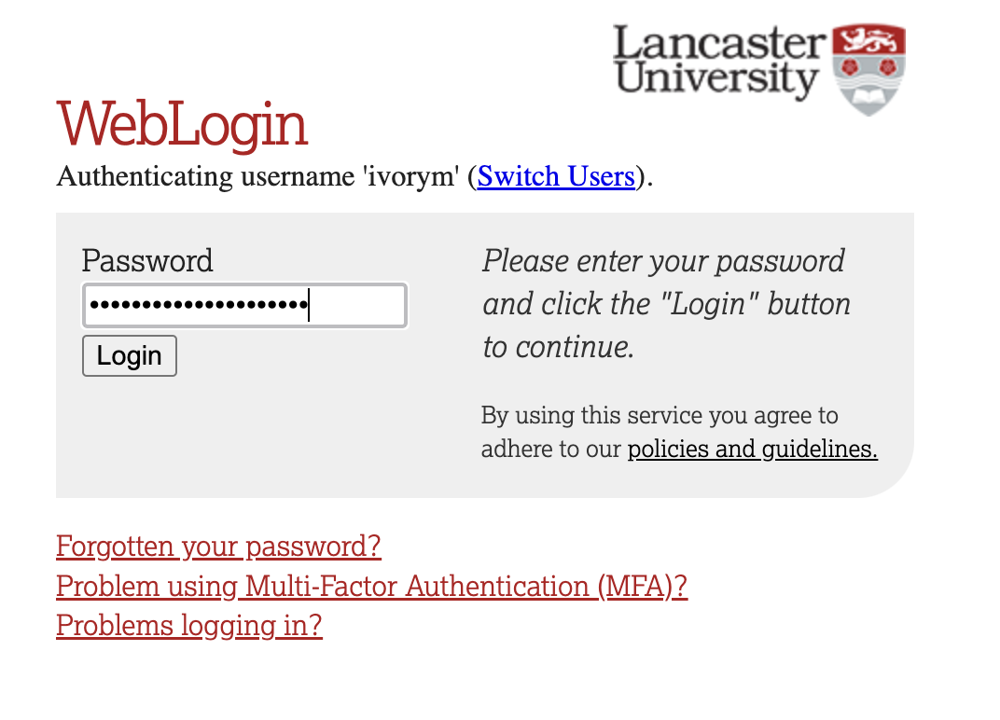

library(tidyverse) # allows pipes, arrang(), summary(), aov(), etc
library(rstatix) # allows group_by()
library(effectsize) # a neat little package that provides the effect size
library(Rmisc) # allows shorthand calculations of standard errors and confidence intervals2. One-Factor Between-Participants ANOVA
Sam Russell, Mark Hurlstone
Lecture
Watch Part 1 here
Watch Part 2 here
Watch Part 3 here
Watch Part 4 here
Download the lecture slides here, and here for a larger version.
Lab
Welcome back to Lab 2 of Year 2 Stats!
It was incredibly pleasant meeting you last week and also getting snug and reacquainted with our old flame - R. Once again, this week, we will be working from an activity sheet, which outlines a bunch of “fun” tasks to complete in R Studio. The objectives of today’s lab are three fold:
- Describing and wrangling a new and shiny data set
- Running and reporting (to APA standards) a one-factor between participants analysis of variance
- Creating a publication quality bar chart (no pressure), which plots our data
As always, myself (Sam Russell), Mark Hurlstone (weeks 6-10) and an apt team of GTAs will be on hand to help you through this journey - so please do not panic - you‚Äôre never alone. In Psyc214, we also encourage peer engagement and joined problem solving - so please do not hesitate to ask for help from another on your table or to work together in small groups. Right, that enough for now, so let‚Äôs get started!üí™
1 - General Introduction to Lab 2
“There is no education like adversity” | Benjamin Disraeli.

1.1 Access to R Studio
To log in to the R server, first make sure that you have the VPN switched on, or you will need to be connected to the university network (Eduroam). To set up the VPN, follow ISS instructions here or connecting to Eduroam here.
When you are connected, navigate to https://psy-rstudio.lancaster.ac.uk, where you will be shown a login screen that looks like the below. Click the option that says “Sign in with SAML”.

This will take you through to the University login screen, where you should enter your username (e.g. ivorym) and then your university password. This will then redirect you to the R server where you can start using RStudio!


Note
If you have already logged in through the university login already, perhaps to get to the portal, then you may not see the username/password screen. When you click login, you will be redirected straight to RStudio. This is because the server shares the login information securely across the university.
1.2 Loading the packages (dependencies) and loading the data set
Perfect. If you are this far you’re in R Studio - the hot bed of statistical joys.
Similar to last week, we first need to access the dataset.
Step 1. To access today’s dataset, we first just need to download it from here
Now that you have the data saved on your machine, we next need to make a space on our own individual R Studio servers in which to house the data. Like last week, to do this, we first need to create a folder. On the server, please navigate to the bottom right panel (see figure below). Here, under the ‘files’ you will see the option to add ‘New Folder’. Click on this and name the new folder psyc214_lab_2 Note. This needs to be spelled correctly and we need to make sure we that we specify this is lab_2! We roll with the times, and lab_1 is now an artifact :)

R Studio Server - Creating a folder on your server
- Great. You have now created a brand, spanking new folder for week 2’s content. To upload today’s week2_robo_lab.csv file into this folder, please open your new psyc214_lab_2 folder. When in the new folder, select the ‘Upload’ tab (see figure below). This will present a box that will ask where the data is that you want to upload. Click on “Browse…”, find where you have the week2_robo_lab.csv data file on your computer and click ‘OK’

Fig.4 - R Studio Server - Uploading data to your new folder
Top work! The data is now chillaxing on your own R Studio server, ready to be called upon.
STOPPPPPPPPP!!!!! We’ll want to be able to save this session on our server: to do so please: click ‘File’ on the top ribbon -> New project. Next, select existing directory and name the working directory ~/psyc214_lab_2 -> hit ’create project
This will now create a project in this week’s R Studio Server lab 2 folder where it will save your progress! You can then return to this at a later date - likely close to the exam wink wink
Like last week, it is important that you work through a script and not through the console. A script is a posh text editor that allows you to write, edit, annotate and save lines of of code. Navigate to the top left pane of RStudio, select File -> New File -> R Script. Working from a script will make it easier to edit your code and you will be able to save your work for a later date.

Creating a script
Be sure to save the script using the File -> Save As….
Let’s start by loading the packages (i.e., the dependencies) we’ll use for this session.
Please copy or type the following commands into R Studio to get these packages activated:
More on these packages later.
Data… Assemble! Ok - Let’s load the data and crack on with today’s work.
- First we need to set the working directory to ‘psyc214_lab_2’, i.e., tell R Studio the location in which today’s data sits, waiting to stand to attention . To recap, the working directory is the default location or folder on your computer or server by which R will read/save any files.
The working directory can be set with the following R code:
setwd("~/psyc214_lab_2")- Great. Now we’re ready to load the dataset which we kindly housed on our server. To do this, please type the following code:
lab2_data <- read_csv("week2_robo_lab.csv")where ‘lab2_data’ is the name we’ve assigned that R will recognise when it calls up our data, read_csv is the R command to pull up the data and “week2_robo_lab.csv” is the name of the data file stored on the server.
Note. During the rest of this session, you will not need to refer to the original downloaded .csv data file. R has all the information stored under the ‘lab2_data’ variable. Further note, you could have called ‘lab2_data’ by pretty much any name you like… ‘my_data’, ‘robo_2’, ‘stat_attack’, etc. - the name is somewhat arbitrary. For the purpose of this lab session and for ease of read, ‘lab2_data’, is perhaps more suitable.
2 - Today’s lab activities
Now that you have loaded the dataset, let’s have a play.
2.1 Some background information about the dataset

Last week, LU researchers tested whether LU statistics students would respond well to a new, ambitious initiative to deploy a team of synthetic robots as lab assistants. The researchers hypothesized that: - Individuals assigned Robot B(eta) would score significantly higher in their Psyc214 tests (Hypothesis 1) - Robot B(eta) would be significantly more liked than Robot(A)lpha (Hypothesis 2)
The researchers expected that this difference would be explained by Robot B(eta)’s closer resemblance to other human beings. Indeed, prior to the initiative, independent raters had reliably agreed that Robot B(eta) resembled a human being more than Robot A(lpha).


The authors ran an independent samples t-test and were vindicated in their predictions. They found a significant difference between groups and were able to reject the null hypothesis - i.e., reject the notion that the two samples had come from the same population
The researchers rejoiced, wrote a manuscript detailing the research, and sent this manuscript off to the journal Computers in Human Behavior.
Roll on a few months and the researchers received a response. Reviewer 2 praised the research, but had reservations about the authors’ sweeping interpretation that as robots become more ‘human-like’ they will always be more approachable and liked. They further suggested that more realistic, unlikeable robots may ultimately be associated with lower Psyc214 test scores.
Reviewer 2 cited the phenomenon of the ‘uncanny valley’ - which states that while more ‘humanlike’ robots are typically more liked, there reaches a point in which strong resemblance between machine and person induces strong revulsion and reduced likeability scores.
For the manuscript to be accepted for publication, Reviewer 2 asked the research team to repeat the experiment with a new cohort of students, but this time to introduce a third robot, one which is even more human-like!
Never one to disappoint the reviewers, the research team went back to the drawing board and drumrolllllllll …… Introducing Robot O(mega)!!!!!

2.2 Study manipulation
It was now time to test how the students responded to the new robot prototype. In a controlled experiment, the researchers randomly assigned groups of students either Robot A(lpha), Robot B(eta), or Robot O(mega). Note this experiment is one factor (Robot assignment) study made of three levels (Robot A, Robot B, Robot C).
Those individuals assigned Robot A(lpha) were denoted as belonging to ‘Group A’.
Those individuals assigned Robot B(eta) were denoted as belonging to ‘Group B’.
Those individuals assigned Robot O(mega) were denoted as beloning to ‘Group O’.
Note. The groups are mutually exclusively - i.e., a participant was assigned to either Group A/Robot A, Group B/Robot B, Group O/Robot O.
2.3 Outcome (a.k.a dependent) variables
The dependent variables for this new study remained the same as in the previous study Recall, the research team measured student stats competence (something important!) and attitudes towards teaching support (something also very important!).
DV1: Student stats competence was measured by a Psyc214 test score; ranging between 40-100.
DV2: Student attitudes towards the robot lab assistant was assessed with a likert scale response between 1-7; with 1 = ‘strongly dislike’ and 7 = ‘strongly like’.
2.4 Predictions of the research team
The research team respectfully disagreed with Reviewer 2 and decided on a general research hypothesis that the more realistic a robot was, the more liked it would and the higher the students would score on stats. Specifically, the experimental hypotheses were that:
- Psyc214 assessment scores would be significantly higher amongst individuals assigned Robot O(mega) than those assigned Robot A(lpha) or B(eta) (Hypothesis 1)
- Attitudes towards a participant’s robot would be significantly higher for individuals assigned Robot O(mega) than those assigned Robot A(lpha) or B(eta)(Hypothesis 2)
Prior to the experiment, independent raters reliably agreed that Robot O(mega) more closely resembled a human being than Robot B(eta) [second closest resemblance] and Robot A(lpha) [lowest resemblance].
2.5 Classifying our variables
Unlike last week, where we skimmed over a bit, we should really start our session by classifying our variables. Classifying variables means assigning them to specific categories or types, such as numeric, factor, character, or logical, based on their nature and the kind of data they represent. We do this to ensure that the data is processed and analyzed correctly in statistical software.
Typical data classes include:
Numeric: These are the general number data type in R, which can be of type integer (i.e., whole number) or double (i.e., with decimals).
Factor: Factors are used to handle categorical data. They can store both strings and integers, and each unique value in a factor has a level associated with it.
Character: This is the basic type to represent strings.
Logical: Represents TRUE or FALSE values.
Date and Time: R has special classes like Date, POSIXct, and POSIXlt to handle date and time.
You can check the class of any object in R using the class() function. For instance:
class(lab2_data$Likeability)[1] "numeric"This tell us that our likeability variable is a numeric data. This makes sense, as our participants were asked to score how much they liked their robot on a scale of 1-7.
We also have three other variables in this dataset, however, named ‘ID’, ‘Group’ and ‘Score’. Please adjust the code directly above to check the classification type for each of the additional three variables.
Let’s start with ‘ID’
# STUDENT COMPLETESIf done correctly, you should receive the following output
class(lab2_data$ID)[1] "numeric"Now let’s check the classification for ‘Group’
# STUDENT COMPLETESYou should receive the following output
class(lab2_data$Group)[1] "character"And finally, for ‘Score’
# STUDENT COMPLETESWith the output as follows
class(lab2_data$Score)[1] "numeric"Ok, great. So this is telling us that our ‘ID’ and ‘Score’ variables are both numerical variables, while ‘Group’ is classified as a character variable - i.e., is a text string.
This latter classification of ‘character’ isn’t so helpful, because our ‘Group’ variable in fact represents our experimental factor (i.e., our Independent Variable). Therefore, we need to convert this variable into a factor. To do this, we run the following code:
# Convert the group variable into a factor with three levels, "A", "B" and "O"
lab2_data$Group = factor(lab2_data$Group, levels = c("A","B","O"))Perfect. Now let’s check that everything worked and that ‘Group’ is now recognised as a factor. Please repeat the step above to check the classification of ‘Group’ using the class() function.
# STUDENT COMPLETESIf everything is hunky, dory you will receive the following output
class(lab2_data$Group)[1] "factor"2.6 Exploring our data
Now that you are familiar with the research setting and the classification of our variables, let’s explore this week’s data.
Let’s start with a nose, by looking a the top 20 rows of our dataset - like last week we will use the head() command.
To view these first rows, please apply the following code:
head(lab2_data, n = 20)# A tibble: 20 × 4
ID Group Likeability Score
<dbl> <fct> <dbl> <dbl>
1 1 A 2 71
2 2 A 2 53
3 3 A 3 62
4 4 A 3 65
5 5 A 4 64
6 6 A 1 61
7 7 A 3 63
8 8 A 3 50
9 9 A 2 59
10 10 A 4 69
11 11 A 4 52
12 12 A 4 63
13 13 A 3 59
14 14 A 2 53
15 15 A 2 54
16 16 A 2 59
17 17 A 3 57
18 18 A 3 54
19 19 A 2 72
20 20 A 3 47Because of the way we ordered our data in the original .csv spreadsheet, we are not able to see beyond the first 20 cases in Group A. Therefore, let’s use the arrange() function to order our data instead by Score - we can combine this with the head() through the use of a pipe %>%. Please recall, a pipe works as a specialized chain, letting you pass an intermediate result onto the next function.
lab2_data %>% arrange(desc(Score)) %>% head(n=20)# A tibble: 20 × 4
ID Group Likeability Score
<dbl> <fct> <dbl> <dbl>
1 207 O 2 79
2 199 O 2 77
3 222 O 1 77
4 175 O 3 75
5 176 O 1 75
6 210 O 2 75
7 219 O 1 75
8 121 B 3 74
9 142 B 5 74
10 161 O 2 74
11 211 O 3 74
12 223 O 3 74
13 87 B 4 73
14 183 O 2 73
15 19 A 2 72
16 94 B 6 72
17 148 B 4 72
18 166 O 3 72
19 177 O 3 72
20 179 O 1 72This all looks fine. We can see that the highest score a student received was 79. We also see a tendency in data in which the highest scores are achieved by the Robot Beta and Omega groups (i.e., groups B and O).
Now let’s do the same and check the 20 highest Likeability values. To do this, please copy the code above, but change ‘Score’ to ‘Likeability’
# STUDENT COMPLETESIf done correctly you will receive the following output
lab2_data %>% arrange(desc(Likeability)) %>% head(n=20)# A tibble: 20 × 4
ID Group Likeability Score
<dbl> <fct> <dbl> <dbl>
1 238 O 33 63
2 126 B 7 50
3 83 B 6 53
4 94 B 6 72
5 99 B 6 64
6 108 B 6 70
7 115 B 6 64
8 116 B 6 60
9 123 B 6 63
10 129 B 6 60
11 133 B 6 64
12 145 B 6 63
13 147 B 6 71
14 150 B 6 69
15 154 B 6 61
16 82 B 5 52
17 86 B 5 67
18 92 B 5 62
19 95 B 5 48
20 96 B 5 62
Fig.10 - Hold up!
Now wait! This data looks proper dodgy. We can see that the highest likeability score was 33. This can’t be right? Can it?! Nope, definitely not, the scale should range from 1 - 7, meaning this is an error.
What on earth happened? Perhaps the ‘3’ key was hit twice by mistake? Perhaps the researcher dropped their biscuit on the keyboard when working? As we do not know what happened, we need to ensure that this data point is recorded as missing. To do this, please type or copy/paste the following command
lab2_data$Likeability[lab2_data$Likeability > 7] = NAThis is asking R Studio to scan the likeability column of our dataset and to set any value above 7 as missing.
Now let’s check out the top 20 likeability scores again, just to be sure the 33 has gone.
lab2_data %>% arrange(desc(Likeability)) %>% head(n=20)# A tibble: 20 × 4
ID Group Likeability Score
<dbl> <fct> <dbl> <dbl>
1 126 B 7 50
2 83 B 6 53
3 94 B 6 72
4 99 B 6 64
5 108 B 6 70
6 115 B 6 64
7 116 B 6 60
8 123 B 6 63
9 129 B 6 60
10 133 B 6 64
11 145 B 6 63
12 147 B 6 71
13 150 B 6 69
14 154 B 6 61
15 82 B 5 52
16 86 B 5 67
17 92 B 5 62
18 95 B 5 48
19 96 B 5 62
20 105 B 5 61Phew, that’s all sorted now.
Wow, looking at the data it seems that Robot B(eta) is extremely likeable - cute little fella.
Something that may be useful now, but also for your third year dissertation, is to filter out some cases. By filtering data, researchers can focus on specific subsets of the data that are most pertinent to their questions. For example, maybe you only want participants who passed a manipulation check or those of a certain age group. You can then use this filtered data or return to your original, larger data set.
Just for fun, let’s try filtering some of our data. I know! What about if we filter out only participants who provided a likeability score of 6 or more - the superlikers? How would we go about filtering this?
To do this, we need to use the filter() function.
# create new sub- data set called 'superlikers' by filtering out those cases in lab2_data whose likeability score >= 6
superlikers_data = lab2_data %>% filter(Likeability >= 6)This has (should have) then created a new sub- data set called ‘superlikers_data’.
Let’s use the head() function here to call this new sub- data set and see if it exists.
head(superlikers_data)# A tibble: 6 × 4
ID Group Likeability Score
<dbl> <fct> <dbl> <dbl>
1 83 B 6 53
2 94 B 6 72
3 99 B 6 64
4 108 B 6 70
5 115 B 6 64
6 116 B 6 60It’s there alright. Ok! So what if we want to work with the subset and ask it some pressing questions? Well we can work with this data in the same way we work with the larger dataset, we just need to make sure we call the correct data - i.e., we call our new ‘superlikers_data’ and not our older / larger ‘lab2_data’.
Let’s give it a go. For example, if we wanted to count how many cases we have in this dataset - i.e., how many superlikers we have - we could write out the following code.
# count the number of data rows in superlikers_data and show this value
show(nrow(superlikers_data))[1] 14Now we know that there are 14 superlikers in total, we can use the head() function together with combined with the n= specifier to bring to glimpse at all cases for our ‘superlikers_data’.
Please give it a go. Hint, this is one line of code: head(nameofdataset, n=xx)
# STUDENT COMPLETESYou should receive the following
head(superlikers_data, n=14)# A tibble: 14 × 4
ID Group Likeability Score
<dbl> <fct> <dbl> <dbl>
1 83 B 6 53
2 94 B 6 72
3 99 B 6 64
4 108 B 6 70
5 115 B 6 64
6 116 B 6 60
7 123 B 6 63
8 126 B 7 50
9 129 B 6 60
10 133 B 6 64
11 145 B 6 63
12 147 B 6 71
13 150 B 6 69
14 154 B 6 612.7 Creating some histograms and looking at descriptives
Ok. Having a go at filtering data and working with data subsets was a lovely distraction, but let’s get back to business and work with the full data set again.
Now that we’re back working with ‘lab2_data’, let’s use the ggplot package to create two histograms to inspect the distribution of all data points for both Likeability and Scores variables. First we call up the ggplot function. In the brackets, we first inform the function the name of the dataset - for us, lab2_data. Then, we write aes() shorthand for for astethics followed by the variable we would like on the x asis - for us ‘Likeability’. Finally, we choose number of bins (e.g., how many columns we’d like for our plot) and choose a fill colour - I have grey, but as this is exploratory and not an official APA style report feel free to try other colours you like.
ggplot(data = lab2_data, aes(x = Likeability)) +
geom_histogram(bins = 5, fill = "grey")Warning: Removed 1 row containing non-finite outside the scale range
(`stat_bin()`).This gives us some general information. Have a chat with a study neighbour or with your inner self about how the number of occurrences tend to be distributed across our Likeability measure.
Now, I would like you to borrow from the example above and try to make your own histogram plot for our other DV, Score. This will require the careful replacing of the x = Likeability to our other dependent variable name. Also, please change the number of bins (aka columns) to 12.
# STUDENT COMPLETESIf done correctly, you should receive the following output:
ggplot(data = lab2_data, aes(x = Score)) +
geom_histogram(bins = 12, fill = "grey")One again, this provides some nice frequency information. Have a chat with a study neighbour or with your inner self about how the number of occurrences tend to be distributed across our Score measure.
Although this information is useful, we are restricted to frequency data (i.e., number of occurrences data) and aggregated data (i.e., we’re seeing all data points, regardless of the group assigned)
Therefore, let’s use the rstatix() package again to get some neat and tidy summary statistics. We first specify the dataset we will use - which is lab2_data. After this we will use a pipe to ask R Studio to pass this data set on to the next function. Here, we use the group_by() function to specify that we want to distinguish between our three different groups - a variable conveniently named ‘Group’. We then use another pipe to pass the intermediate result onto the next function - the get_summary_stats(). In the parentheses we include our two DVs ‘Likeability’ and ‘Score’. Finally we are asked to specify what ‘type’ of summary statistic we would like. Let’s go for mean, standard deviation, min and max values.
Note here (and unlike last week) that we are using the ‘=’ symbol to assign the result of our operations to a specific variable. Here we have called it ‘descriptives’ but we could have a called it almost anything at all. This means we can call up ‘descriptives’ at a later time, if needs be, without needing to reproduce all of the code.
descriptives = lab2_data %>% #Access our data
group_by(Group) %>% #Seperate data by group
#get the mean, sd, min and max values for Likeability and Score
get_summary_stats(Likeability, Score, show = c("mean", "sd", "min", "max"))
options(digits = 4) # round the results to *at least* two-decimal places - you can play with the digits to see how it varies
print.data.frame(descriptives) # print descriptives Group variable n mean sd min max
1 A Likeability 80 2.500 0.928 1 4
2 A Score 80 58.100 6.449 44 72
3 B Likeability 80 4.500 1.006 2 7
4 B Score 80 60.362 7.266 40 74
5 O Likeability 79 2.114 0.847 1 4
6 O Score 80 63.600 7.217 47 79Ok, perfect. This now tells us a lot of information. For example, we can see that the mean Likeability scores for Groups A, B, O are 2.5, 4.5, 2.11, respectively.
Once again, it seems that we may have different values between groups. However, it is impossible to know whether there are statistically differences based on eye-balling the means. Rather, we need to statistically examine the degree of shared within and between group variances.
3. And more
3.1 One-factor between group ANOVA
To identify whether the differences between groups are statistically significant, we need to perform an Analysis of Variance (ANOVA). First, let’s be sure we have chosen the correct type of ANOVA. We have one factor. This is because we have one Independent Variable (Robot) with three levels (Robot A, B and O). Also, the design is between group, as each participant is assigned to only one robot, and data from only one time point is taken.
To run our one-factor between participants ANOVA, we will use tidyverse’s ‘aov()’ function. Let’s set ‘Likeability’ as our first dependent variable of examination. ‘Group’ is then our predictive factor (independent variable). Note, in the code below, the DV and the IV are separated by the ‘~’ character. Please carry out the following command. This also includes requesting a summary and effectsize for our model.
Model_1 = aov(data = lab2_data, Likeability ~ Group) # We name our overarching model Model_1
print(summary(Model_1), digits = 5) #We print a summary of this model. This provides F statistic and P value. Change the number of digits to alter the number of displayed decimal places. Df Sum Sq Mean Sq F value Pr(>F)
Group 2 261.61 130.803 151.34 < 2.2e-16 ***
Residuals 236 203.97 0.864
---
Signif. codes: 0 '***' 0.001 '**' 0.01 '*' 0.05 '.' 0.1 ' ' 1
1 observation deleted due to missingness effectsize(Model_1) #We ask for an eta2 effect size for our modelFor one-way between subjects designs, partial eta squared is equivalent
to eta squared. Returning eta squared.# Effect Size for ANOVA
Parameter | Eta2 | 95% CI
-------------------------------
Group | 0.56 | [0.50, 1.00]
- One-sided CIs: upper bound fixed at [1.00].This has provided us with a whole bunch of useful information! It shows us the between group variability value (do you remember, the numerator value in our F ratio equation from lecture 2?), which R has named the Group Mean Square (a value here of 130.803).
It also provides the within group variability value - aka the error term (do you remember, the denominator in our F ratio equation from lecture 2), which R has named the Residuals mean square (a value here of 0.864)
It provides the crucial F-ratio statistic, here a value of 151.34.
note, like in lecture 2, you could have calculated this value yourselves by dividing the 130.803 numerator by the 0.864 denominator. Try it in the r console by typing: Note, the value will differ slightly because of rounding - i.e., the number of decimals R works with versus us
130.803 / 0.864[1] 151.4The output also shows the Eta-squared (η2) effect size. As a rule of thumb, η2 = 0.01 indicates a small effect; η2 = 0.06 indicates a medium effect; η2 = 0.14 indicates a large effect. Our eta-squared (η2) represents a very large effect - i.e., the effect of our experimental manipulation on the Likeability scores was very large indeed.
Just for fun - remember before when we generated the descriptive statistics and it was mentioned that they are stored to be reviewed again at our leisure? Let’s bring them back up again and take another peek. Why not?!
# STUDENT COMPLETESIF done correctly, you will get the following
print.data.frame(descriptives) # print descriptives Group variable n mean sd min max
1 A Likeability 80 2.500 0.928 1 4
2 A Score 80 58.100 6.449 44 72
3 B Likeability 80 4.500 1.006 2 7
4 B Score 80 60.362 7.266 40 74
5 O Likeability 79 2.114 0.847 1 4
6 O Score 80 63.600 7.217 47 793.2 Reporting the results of the one-factor between-participants ANOVA in APA format
All results should be written up in accordance with the American Psychological Association’s (APA) guidance. This ensures that your results are easy to interpret and that all the relevant information is present for those wishing to review/replicate your work.
The current results can be reported as following: “A one-factor between-participants ANOVA revealed that likeability scores were significantly different between our robot groups (Robot A M = 2.50, SD = 0.93; Robot B M = 4.50, SD = 1.01; Robot O M = 2.11, SD = 0.85), F(2,236) = 151, p < .001, η2 = 0.56, 95% CI[0.50, 1.00].
Please note. While the ANOVA tells us that there are differences between groups, it doesn’t tell us specifically which groups differ from one another. For example do Group A and B statistically differ? A and O? B and O? The only way to know this definitively is to carry out posthoc/planned contrast tests. We won’t do this today, as this will be a key facet of Lecture 3 and Lab 3, but please be aware that without these supplementary analyses the above APA reporting is incomplete
3.3 Creating an APA barchart
When reporting the results of an ANOVA in an APA report or publication, it is typical to include a barchart, illustrating the average scores and error bars for each group.
As this is a formal chart, it is more sterile and less jazzy than the coloured graphs you have produced before. There are also important APA aesthetics which are required, such as grey colour scales, white background, black axes and text, etc. Before you fall asleep, let’s make one of these posh plots.
Please copy and paste the following code. Please pay attention to the #annotations, which provide detail as to what each line of code is doing:
lab2_data %>% #our dataset
ggplot(aes(x= Group, # specifying our X axis
y = Likeability, # specifying our Y axis
fill = Group)) + # How we will colour our separate bars
geom_col(width = .7, position = position_dodge(.3)) + # width of columns and space between columns
scale_fill_manual(values = c("#D4D4D4", "#737373", "#323232")) + # APA colours for bars - yuck!
scale_y_continuous(expand = expansion(0), # trick to remove space below 0 on y axis
limits = c(0, 7), # set limit of Y axis to 7
breaks = seq(0, 7, 1)) + # set the breaks between yaxis points
theme(panel.background = element_blank(), # removing the default grey background panel
axis.line = element_line(color = "black"), # creating black axes lines
axis.ticks.x = element_blank(),
legend.position = "none") # removing the legend, which is redundantWarning: Removed 1 row containing missing values or values outside the scale range
(`geom_col()`).This looks great. But to make it APA publishable we need to add some error bars to our plot. To add things like error bars and 95% Confidence intervals, we first need work out the values of these summary statistics. Luckily, an amazing package called Rmisc will provide these values for us with a simple command.
Let’s make a new dataset for plotting our graphs which will include these values - using the summarySE() function of Rmisc
Like_plot = summarySE(lab2_data, measurevar="Likeability", groupvars=c("Group"), na.rm = TRUE) #Like_plot is the name of our plot data set and na.rm asks R Studio to ignore our missing data point when calculating the summariesNot let’s view this new data using head()
head(Like_plot) Group N Likeability sd se ci
1 A 80 2.500 0.9278 0.10373 0.2065
2 B 80 4.500 1.0063 0.11251 0.2239
3 O 79 2.114 0.8471 0.09531 0.1897You can see it now gives us a summary of our Likeability data, including the Means, Standard Deviations, Standard Errors and confidence intervals.
Now let’s add the Standard Error Bars to our graph. To do this, we repeat the same plotting code from above, but with two key differences. 1. We need to ensure that we change the dataset for the graph from lab2_data to Like_plot (our new summary data). 2. We add the function geom_errorbar() to specify that we would like to include error bars for our graph.
Like_plot %>% #our dataset
ggplot(aes(x= Group, # our X axis
y = Likeability, # our Y axis
fill = Group)) + # How we will colour our seperate bars
geom_col(width = .7, position = position_dodge(.3)) + # width of columns and space between columns
scale_fill_manual(values = c("#D4D4D4", "#737373", "#323232")) + # APA colours for bars
scale_y_continuous(expand = expansion(0), # trick to remove space below 0 on y axis
limits = c(0, 7),
breaks = seq(0, 7, 1)) + # set limit of Y axis to 7
theme(panel.background = element_blank(), # removing the background panel colour
axis.line = element_line(color = "black"), # creating black axes lines
axis.ticks.x = element_blank(),
legend.position = "none") + # removing the legend, which is redundant
geom_errorbar(aes(ymin=Likeability-se, ymax=Likeability+se, width = 0.2))Perfect! Error bars accomplished.
4 Further tasks
- We have seen that there are signficant differences between at least two groups when it comes to the Likeability scores. Now please eye ball the means and the barchart and try to predict which groups differed. Talk this over with a lab mate or your inner self. We will test this with further analyses next week!
# STUDENT COMPLETES- We have yet to look for statistical differences between in Psyc214 Scores between our groups. Run another one-factor between-participants ANOVA following the instructions above. This time, be sure to replace our previous DV Likeability with our other DV - Score.
# ANSWER CODE
Model_2 = aov(data = lab2_data, Score ~ Group)
print(summary(Model_2), digits = 5) #We print a summary of this model. This provides F statistic and P value. Change the number of digits to alter the number of displayed decimal places. Df Sum Sq Mean Sq F value Pr(>F)
Group 2 1222.7 611.34 12.522 6.768e-06 ***
Residuals 237 11570.9 48.82
---
Signif. codes: 0 '***' 0.001 '**' 0.01 '*' 0.05 '.' 0.1 ' ' 1 effectsize(Model_2) #We ask for an eta2 effect size for our modelFor one-way between subjects designs, partial eta squared is equivalent
to eta squared. Returning eta squared.# Effect Size for ANOVA
Parameter | Eta2 | 95% CI
-------------------------------
Group | 0.10 | [0.04, 1.00]
- One-sided CIs: upper bound fixed at [1.00].When completely correctly, you should get the following output:
Model_2 = aov(data = lab2_data, Score ~ Group)
print(summary(Model_2), digits = 5) #We print a summary of this model. This provides F statistic and P value. Change the number of digits to alter the number of displayed decimal places. Df Sum Sq Mean Sq F value Pr(>F)
Group 2 1222.7 611.34 12.522 6.768e-06 ***
Residuals 237 11570.9 48.82
---
Signif. codes: 0 '***' 0.001 '**' 0.01 '*' 0.05 '.' 0.1 ' ' 1 effectsize(Model_2) #We ask for an eta2 effect size for our modelFor one-way between subjects designs, partial eta squared is equivalent
to eta squared. Returning eta squared.# Effect Size for ANOVA
Parameter | Eta2 | 95% CI
-------------------------------
Group | 0.10 | [0.04, 1.00]
- One-sided CIs: upper bound fixed at [1.00].- Report this second ANOVA to APA standards following example above (3.2)
# STUDENT COMPLETES- Repeat the steps 3.3 and again create an APA standard barchart - this time plotting our three different groups and their Psyc214 Scores. Please finish this off with error bars. *Hint for the error bars - you will need to create a new ‘Scores_plot’ sub data set using the summarySE() function.
Scores_plot = summarySE(lab2_data, measurevar="Score", groupvars=c("Group"), na.rm = TRUE) #Like_plot is the name of our plot data set and na.rm asks R Studio to ignore our missing data point when calculating there summaries
Scores_plot %>% #our dataset
ggplot(aes(x= Group, # our X axis
y = Score, # our Y axis
fill = Group)) + # How we will colour our seperate bars
geom_col(width = .7, position = position_dodge(.3)) + # width of columns and space between columns
scale_fill_manual(values = c("#D4D4D4", "#737373", "#323232")) + # APA colours for bars
scale_y_continuous(expand = expansion(0), # trick to remove space below 0 on y axis
limits = c(0, 90),
breaks = seq(0, 90, 5)) + # set limit of Y axis to 7
theme(panel.background = element_blank(), # removing the background panel colour
axis.line = element_line(color = "black"), # creating black axes lines
axis.ticks.x = element_blank(),
legend.position = "none") + # removing the legend, which is redundant
geom_errorbar(aes(ymin=Score-se, ymax=Score+se, width = 0.2))- Again, try to think which groups may significantly differ from one another by eyeballing the means and barchart information. We will confirm this all next week.
# STUDENT COMPLETES- Just for fun, produce descriptive statistics (mean, sd, min, max) for our ‘superlikers’. When you do this, don’t group data by Groups A, B and O. Talk to yourself or class mate about these statistics and what they tell you.
# ANSWER CODE
descriptives_superlikers = superlikers_data %>% #Access our data
#get the mean, sd, min and max values for Likeability and Score
get_summary_stats(Likeability, Score, show = c("mean", "sd", "min", "max"))
options(digits = 3) # round the results to *at least* two-decimal places - you can play with the digits to see how it varies
print.data.frame(descriptives_superlikers) # print descriptives variable n mean sd min max
1 Likeability 14 6.07 0.267 6 7
2 Score 14 63.14 6.347 50 72- Produce a histogram for the superlikers sub- data set, checking the distribution of their test ‘Scores’.
# ANSWER CODE
ggplot(data = superlikers_data, aes(x = Score)) +
geom_histogram(bins = 5, fill = "grey")- Before you finish, make sure you save a copy of the script that you have been working on by the end of the session. This provides you with the record - the digital trace - on what you have done. And it means you can come back and repeat any of the work you have performed.
Please end your session on the RStudio server, this logs you out of the server and stops any ongoing activities and tasks you have set up, maybe in the background.

Fig 11. Ending session on R Studio
- …………………. Now breathe! You’ve rocked it!!!

Fig 12. Top work!